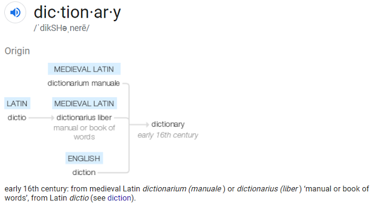

An example of this is the word dictionary
The word dictionary, as you might guess, comes from an older English word, "diction" But the word diction first came from the Latin word "dictio."
Before scrolling down Try to think of a word we might get from each one in English.
| Latin Word | English Meaning |
|---|---|
| “dens” | Teeth |
| “novus" | New |
| “capio” | Take |
Here are some of the derivatives: